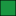

<!doctype html>
<html lang="en">
    <title>Proximity of grocery stores to low-income neighbourhoods in Brampton</title>
    <head>
        <meta charset="utf-8">
        <meta http-equiv="X-UA-Compatible" content="IE=edge">
        <meta name="viewport" content="initial-scale=1,user-scalable=no,maximum-scale=1,width=device-width">
        <meta name="mobile-web-app-capable" content="yes">
        <meta name="apple-mobile-web-app-capable" content="yes">
        <link rel="stylesheet" href="css/leaflet.css" />
        <link rel="stylesheet" type="text/css" href="css/qgis2web.css">
        <link rel="stylesheet" href="css/MarkerCluster.css" />
        <link rel="stylesheet" href="css/MarkerCluster.Default.css" />
        <style>
        html, body, #map {
            width: 100%;
            height: 100%;
            padding: 0;
            margin: 0;
        }
        </style>
        <title></title>
    </head>
    <body>
        <div id="map">
        </div>
        <script src="js/qgis2web_expressions.js"></script>
        <script src="js/leaflet.js"></script>
        <script src="js/leaflet-heat.js"></script>
        <script src="js/leaflet.rotatedMarker.js"></script>
        <script src="js/OSMBuildings-Leaflet.js"></script>
        <script src="js/leaflet-hash.js"></script>
        <script src="js/leaflet-tilelayer-wmts.js"></script>
        <script src="js/Autolinker.min.js"></script>
        <script src="js/leaflet.markercluster.js"></script>
        <script src="data/Grocerystores0.js"></script>
        <script src="data/Walkingtimestostore1.js"></script>
        <script>
        var highlightLayer;
        function highlightFeature(e) {
            highlightLayer = e.target;

            if (e.target.feature.geometry.type === 'LineString') {
              highlightLayer.setStyle({
                color: '#ffff00',
              });
            } else {
              highlightLayer.setStyle({
                fillColor: '#ffff00',
                fillOpacity: 1
              });
            }
            highlightLayer.openPopup();
        }
        L.ImageOverlay.include({
            getBounds: function () {
                return this._bounds;
            }
        });
        var map = L.map('map', {
            zoomControl:true, maxZoom:28, minZoom:1
        }).fitBounds([[43.6439068287,-79.8403726818],[43.749248424,-79.6118900842]]);
        var hash = new L.Hash(map);
        map.attributionControl.addAttribution('<a href="https://github.com/tomchadwin/qgis2web" target="_blank">qgis2web</a>');
        var bounds_group = new L.featureGroup([]);
        var basemap0 = L.tileLayer('http://{s}.tile.openstreetmap.fr/hot/{z}/{x}/{y}.png', {
            attribution: '&copy; <a href="http://openstreetmap.org">OpenStreetMap</a> contributors,<a href="http://creativecommons.org/licenses/by-sa/2.0/">CC-BY-SA</a>,Tiles courtesy of <a href="http://hot.openstreetmap.org/" target="_blank">Humanitarian OpenStreetMap Team</a>',
            maxZoom: 28
        });
        basemap0.addTo(map);
        function setBounds() {
        }
        function geoJson2heat(geojson, weight) {
          return geojson.features.map(function(feature) {
            return [
              feature.geometry.coordinates[1],
              feature.geometry.coordinates[0],
              feature.properties[weight]
            ];
          });
        }
        function pop_Grocerystores0(feature, layer) {
            layer.on({
                mouseout: function(e) {
                    layer.setStyle(style_Grocerystores0(feature));

                    if (typeof layer.closePopup == 'function') {
                        layer.closePopup();
                    } else {
                        layer.eachLayer(function(feature){
                            feature.closePopup()
                        });
                    }
                },
                mouseover: highlightFeature,
            });
            var popupContent = '<table>\
                    <tr>\
                        <td colspan="2"><strong>Name</strong><br />' + (feature.properties['Name'] !== null ? Autolinker.link(String(feature.properties['Name'])) : '') + '</td>\
                    </tr>\
                </table>';
            layer.bindPopup(popupContent);
        }

        function style_Grocerystores0() {
            return {
                pane: 'pane_Grocerystores0',
                radius: 4.0,
                opacity: 1,
                color: 'rgba(0,0,0,1.0)',
                dashArray: '',
                lineCap: 'butt',
                lineJoin: 'miter',
                weight: 1,
                fillOpacity: 1,
                fillColor: 'rgba(221,116,127,1.0)',
            }
        }
        map.createPane('pane_Grocerystores0');
        map.getPane('pane_Grocerystores0').style.zIndex = 400;
        map.getPane('pane_Grocerystores0').style['mix-blend-mode'] = 'normal';
        var layer_Grocerystores0 = new L.geoJson(json_Grocerystores0, {
            attribution: '<a href=""></a>',
            pane: 'pane_Grocerystores0',
            onEachFeature: pop_Grocerystores0,
            pointToLayer: function (feature, latlng) {
                var context = {
                    feature: feature,
                    variables: {}
                };
                return L.circleMarker(latlng, style_Grocerystores0(feature))
            }
        });
        bounds_group.addLayer(layer_Grocerystores0);
        map.addLayer(layer_Grocerystores0);
        function pop_Walkingtimestostore1(feature, layer) {
            layer.on({
                mouseout: function(e) {
                    layer.setStyle(style_Walkingtimestostore1(feature));

                    if (typeof layer.closePopup == 'function') {
                        layer.closePopup();
                    } else {
                        layer.eachLayer(function(feature){
                            feature.closePopup()
                        });
                    }
                },
                mouseover: highlightFeature,
            });
            var popupContent = '<table>\
                    <tr>\
                        <th scope="row">Nearest grocer</th>\
                        <td>' + (feature.properties['Name_1'] !== null ? Autolinker.link(String(feature.properties['Name_1'])) : '') + '</td>\
                    </tr>\
                    <tr>\
                        <th scope="row">Low income population<br></th>\
                        <td>' + (feature.properties['LowIncome'] !== null ? Autolinker.link(String(feature.properties['LowIncome'])) : '')  +  ' %</td>\
                    </tr>\
                    <tr>\
                    <tr>\
                        <th scope="row">Walk time to nearest grocer</th>\
                        <td>' + (feature.properties['WalkTimeH'] !== null ? Autolinker.link(String(feature.properties['WalkTimeH'])) : '') + ' min </td>\
                    </tr>\
                </table>';
            layer.bindPopup(popupContent);
        }

        function style_Walkingtimestostore1(feature) {
            if (feature.properties['WalkTime'] >= 0.000000 && feature.properties['WalkTime'] <= 5.000000 ) {
                return {
                pane: 'pane_Walkingtimestostore1',
                opacity: 1,
                color: 'rgba(0,0,0,1.0)',
                dashArray: '',
                lineCap: 'butt',
                lineJoin: 'miter',
                weight: 1.0, 
                fillOpacity: 1,
                fillColor: 'rgba(26,150,65,1.0)',
            }
            }
            if (feature.properties['WalkTime'] >= 5.000000 && feature.properties['WalkTime'] <= 10.000000 ) {
                return {
                pane: 'pane_Walkingtimestostore1',
                opacity: 1,
                color: 'rgba(0,0,0,1.0)',
                dashArray: '',
                lineCap: 'butt',
                lineJoin: 'miter',
                weight: 1.0, 
                fillOpacity: 1,
                fillColor: 'rgba(119,194,92,1.0)',
            }
            }
            if (feature.properties['WalkTime'] >= 10.000000 && feature.properties['WalkTime'] <= 15.000000 ) {
                return {
                pane: 'pane_Walkingtimestostore1',
                opacity: 1,
                color: 'rgba(0,0,0,1.0)',
                dashArray: '',
                lineCap: 'butt',
                lineJoin: 'miter',
                weight: 1.0, 
                fillOpacity: 1,
                fillColor: 'rgba(195,229,134,1.0)',
            }
            }
            if (feature.properties['WalkTime'] >= 15.000000 && feature.properties['WalkTime'] <= 20.000000 ) {
                return {
                pane: 'pane_Walkingtimestostore1',
                opacity: 1,
                color: 'rgba(0,0,0,1.0)',
                dashArray: '',
                lineCap: 'butt',
                lineJoin: 'miter',
                weight: 1.0, 
                fillOpacity: 1,
                fillColor: 'rgba(255,255,192,1.0)',
            }
            }
            if (feature.properties['WalkTime'] >= 20.000000 && feature.properties['WalkTime'] <= 30.000000 ) {
                return {
                pane: 'pane_Walkingtimestostore1',
                opacity: 1,
                color: 'rgba(0,0,0,1.0)',
                dashArray: '',
                lineCap: 'butt',
                lineJoin: 'miter',
                weight: 1.0, 
                fillOpacity: 1,
                fillColor: 'rgba(253,201,128,1.0)',
            }
            }
            if (feature.properties['WalkTime'] >= 30.000000 && feature.properties['WalkTime'] <= 40.000000 ) {
                return {
                pane: 'pane_Walkingtimestostore1',
                opacity: 1,
                color: 'rgba(0,0,0,1.0)',
                dashArray: '',
                lineCap: 'butt',
                lineJoin: 'miter',
                weight: 1.0, 
                fillOpacity: 1,
                fillColor: 'rgba(240,124,74,1.0)',
            }
            }
            if (feature.properties['WalkTime'] >= 40.000000 && feature.properties['WalkTime'] <= 50.000000 ) {
                return {
                pane: 'pane_Walkingtimestostore1',
                opacity: 1,
                color: 'rgba(0,0,0,1.0)',
                dashArray: '',
                lineCap: 'butt',
                lineJoin: 'miter',
                weight: 1.0, 
                fillOpacity: 1,
                fillColor: 'rgba(215,25,28,1.0)',
            }
            }
        }
        map.createPane('pane_Walkingtimestostore1');
        map.getPane('pane_Walkingtimestostore1').style.zIndex = 401;
        map.getPane('pane_Walkingtimestostore1').style['mix-blend-mode'] = 'normal';
    var layer_Walkingtimestostore1 = new L.geoJson(json_Walkingtimestostore1, {
        attribution: '<a href=""></a>',
        pane: 'pane_Walkingtimestostore1',
        onEachFeature: pop_Walkingtimestostore1,
        style: style_Walkingtimestostore1
    });
        bounds_group.addLayer(layer_Walkingtimestostore1);
        map.addLayer(layer_Walkingtimestostore1);
        var baseMaps = {};
        L.control.layers(baseMaps,{'Walking times to store<br /><table><tr><td style="text-align: center;"></td><td> 0 - 5 minutes</td></tr><tr><td style="text-align: center;"></td><td> 5 - 10 minutes</td></tr><tr><td style="text-align: center;"></td><td> 10 - 15 minutes</td></tr><tr><td style="text-align: center;"></td><td> 15 - 20 minutes</td></tr><tr><td style="text-align: center;"></td><td> 20 - 30 minutes</td></tr><tr><td style="text-align: center;"></td><td> 30 - 40 minutes</td></tr><tr><td style="text-align: center;"></td><td> 40 - 50 minutes</td></tr></table>': layer_Walkingtimestostore1,' Grocery stores': layer_Grocerystores0,},{collapsed:false}).addTo(map);
        setBounds();
        </script>
    </body>
</html>
